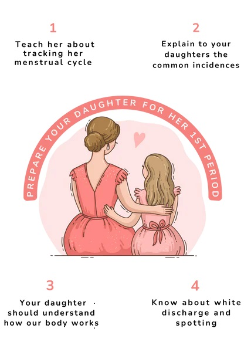

Sanitary Napkins
Sanitary Napkins  Menstrual Cups
Menstrual Cups Tampons
Tampons Panty Liner
Panty LinerCHAPTER 2 ~ ALL ABOUT PERIODS!
Topics to be covered under All About Periods-
1] THE REPRODUCTIVE SYSTEM
2] MENSTRUATION
3] MANAGING PERIODS
4] WHEN TO VISIT A DOCTOR

The Reproductive system
The reproductive system is a complex set of organs and structures responsible for the production of offspring in sexually reproducing organisms.
In humans, the reproductive system is divided into male and female components, each with specific functions.
A period is a release of blood from a girl's uterus, out through her vagina. It is a sign that she is getting close to the end of puberty.
The term "periods" typically refers to the menstrual cycle, which is part of the reproductive system in females.
The reproductive system is responsible for the production of offspring, and it includes various organs and structures that work together.
Here's an overview of the female reproductive system and the menstrual cycle:
Female Reproductive System:
- 1. Ovaries:
- The primary female reproductive organs.
- Produce eggs (ova) and hormones, including estrogen and progesterone.
- 2. Fallopian Tubes:
- Tubes that connect the ovaries to the uterus.
- Site of fertilization, where sperm can meet and fertilize an egg.
- 3. Uterus:
- A muscular organ where a fertilized egg implants and grows into a fetus during pregnancy.
- 4. Cervix:
- The narrow passage at the lower end of the uterus that connects to the vagina.
- 5. Vagina:
- The muscular tube connecting the cervix to the external genitalia.
- 6. External Genitalia:
- Includes the labia majora, labia minora, clitoris, and other structures.

Menstruation
Menstruation, commonly referred to as a woman's period, is a natural biological process that occurs in the reproductive system.
It is a regular monthly shedding of the uterine lining, which is accompanied by bleeding.
Menstruation is a key part of the menstrual cycle, which typically lasts about 28 days, although it can vary from person to person.
The menstrual cycle is controlled by hormones, primarily estrogen and progesterone, which are produced by the ovaries.
The cycle begins with the onset of menstruation and involves the development and release of an egg from the ovaries (ovulation) and the preparation of the uterus for a potential pregnancy.
If fertilization of the egg by sperm does not occur, the uterine lining is shed during menstruation, and the cycle begins anew.
Menstrual blood is a combination of blood, mucus, and tissue from the lining of the uterus.
The bleeding usually lasts for about 2 to 7 days, and the amount of blood loss varies from person to person.
Menstruation is a normal and healthy part of a woman's reproductive system, but it can be associated with physical and emotional symptoms, such as cramps, bloating, mood swings, and breast tenderness.
These symptoms are often referred to as premenstrual syndrome (PMS).
It's important to note that not everyone who menstruates identifies as a woman, as gender identity is separate from biological sex.
Some transgender men and non-binary individuals may also experience menstruation.
The menstrual cycle is a monthly series of hormonal changes and physical events that prepare a woman's body for pregnancy.
It typically lasts about 28 days, but variations are common.

Following are the phases of Menstrual cycle:
- 1. Menstruation (Days 1-5):
- The shedding of the uterine lining (endometrium) if fertilization does not occur.
- Menstruation is commonly known as a period. When you menstruate, your uterus lining sheds and flows out of your vagina. Your period contains blood, mucus and some cells from the lining of your uterus. The average length of a period is three to seven days.
- 2. Follicular Phase (Days 1-14):
- The follicular phase starts on the first day of your period and lasts for 13 to 14 days, ending in ovulation. The pituitary gland in the brain releases a hormone to stimulate the production of follicles on the surface of an ovary. Usually, only one follicle will mature into an egg. This can happen from day 10 of your cycle. During this phase, your uterus lining also thickens in preparation for pregnancy.
- 3. Ovulation (Around Day 14):
- Ovulation is when a mature egg is released from an ovary and moves along a fallopian tube towards your uterus. This usually happens once each month, about two weeks before your next period. Ovulation can last from 16 to 32 hours.
- It is possible to get pregnant in the five days before ovulation and on the day of ovulation, but it’s more likely in the three days leading up to and including ovulation. Once the egg is released, it will survive up to 24 hours. If sperm reaches the egg during this time, you may get pregnant.
- This is the most fertile phase.
- 4. Luteal Phase (Days 15-28):
- After ovulation, cells in the ovary (the corpus luteum), release progesterone and a small amount of oestrogen. This causes the lining of the uterus to thicken in preparation for pregnancy.
- If fertilization occurs, If a fertilised egg implants in the lining of the uterus, the corpus luteum continues to produce progesterone, which maintains the thickened lining of the uterus.
- If pregnancy does not occur, the corpus luteum dies, progesterone levels drop, the uterus lining sheds and the period begins again.
Hormones Involved:
- 1. Estrogen:
- Produced by the ovaries.
- Stimulates the development of the uterine lining.
- 2. Progesterone:
- Produced by the corpus luteum.
- Prepares the uterine lining for implantation and helps maintain a pregnancy.
- 3. Follicle-Stimulating Hormone (FSH) and Luteinizing Hormone (LH):
- Produced by the pituitary gland.
- Regulate the menstrual cycle and control ovulation.
Understanding the menstrual cycle is essential for women's reproductive health and family planning.
There is a lot to learn about periods. Here are some common questions that teens have:
When Do Most Girls Get Their Period?
Most girls get their first period when they're around 12. But getting it any time between age 10 and 15 is OK. Every girl's body has its own schedule.
There isn't one right age for a girl to get her period. But there are some clues that it will start soon:
- Most of the time, a girl gets her period about 2 years after her breasts start to develop.
- Another sign is vaginal discharge fluid (sort of like mucus) that a girl might see or feel on her underwear. This discharge usually begins about 6 months to a year before a girl gets her first period.
What Causes a Period?
A period happens because of changes in hormones in the body. Hormones are chemical messengers. The ovaries release the female hormones estrogen and progesterone.
These hormones cause the lining of the uterus (or womb) to build up. The built-up lining is ready for a fertilized egg to attach to and start developing.
If there is no fertilized egg, the lining breaks down and bleeds. Then the same process happens all over again.

It usually takes about a month for the lining to build up, then break down. That is why most girls and women get their periods around once a month.
How Does Ovulation Relate to Periods?
Ovulation is the release of an egg from the ovaries. The same hormones that cause the uterus lining to build up also cause an egg to leave one of the ovaries.
The egg travels through a thin tube called a fallopian tube to the uterus.
If the egg is fertilized by a sperm cell, it attaches to the wall of the uterus, where over time it develops into a baby. If the egg is not fertilized, the uterus lining breaks down and bleeds, causing a period.
Do Periods Happen Regularly When Menstruation Starts?
For the first few years after a girl starts her period, it may not come regularly. This is normal at first. By about 2–3 years after her first period, a girl's periods should be coming around once every 4–5 weeks.
How Long Do Periods Last?
Periods usually last about 5 days. But a period can be shorter or last longer.
How Often Does a Period Happen?
Periods usually happen about once every 4–5 weeks. But some girls get their periods a little less or more often.

Managing periods
Managing your periods involves taking care of your physical and emotional well-being during menstruation. Here are some general tips which will help you manage your menstrual cycle smoothly :
Use Menstrual Products
Pads (or sanitary napkins) : Disposable pads are the most commonly used menstrual hygiene product. Change them every 4-6 hours.
Tampons : Inserted into the vagina, tampons should be changed every 4-8 hours. Choose the right absorbency for your flow.
Menstrual cups : Reusable silicone cups can be worn for up to 12 hours. They're eco-friendly and cost-effective.
Maintain Personal Hygiene:
Regular Showers: Keeping clean is crucial during your period. Shower at least once a day to maintain hygiene.
Change Products Regularly: Avoid wearing the same pad or tampon for too long to prevent bacterial growth and odor.
Stay Hydrated and Maintain a Balanced Diet:
Stay Hydrated: Drink plenty of water to stay hydrated, which can help reduce bloating.
Iron-Rich Foods: Consume iron-rich foods like leafy greens, red meat, and beans to replenish iron lost during menstruation.
Pain Relief:
Painkillers: Over-the-counter pain relievers like ibuprofen can help manage menstrual cramps.
Heat Therapy: Applying heat to the lower abdomen can provide relief from cramps. Use a hot water bottle or a heating pad.
Track Your Menstrual Cycle:
Use Apps: There are various period-tracking apps available to help predict your menstrual cycle, ovulation, and PMS symptoms.
Know Your Body: Pay attention to your body's signals and track your menstrual cycle regularly.
Comfortable Clothing:
Wearing comfortable clothing during your period can make a significant difference in how you feel.
Choose underwear and clothing made from breathable fabrics like cotton. Cotton allows air circulation, reducing the risk of irritation and discomfort.
Stay Informed:
Carry Supplies: Keep a stash of sanitary products in your bag so you're always prepared.
Backup Options: Have an extra pair of underwear and pants, just in case of leaks.
Seek Medical Advice:
Medical Consultation: If you experience severe pain, irregular periods, or other concerning symptoms, consult a healthcare professional.

When to see your doctor
Talk to your doctor if you are worried about your period.
- For example, if:
- your period patterns change
- your periods are getting heavier (i.e. you need to change your pad or tampon more often than every two hours)
- your periods last more than eight days
- your periods come less than 21 days apart
- your periods come more than two to three months apart
- your symptoms are so painful they affect your daily activities
- you bleed between periods
- you bleed after sexual intercourse.